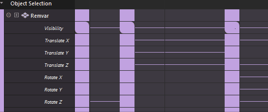

“摄影表”(Dope Sheet)工具栏
本主题介绍了“摄影表”(Dope Sheet)工具栏上各个图标的功能。
 选择工具(Select Tool)
选择工具(Select Tool)
- （热键：Q）
-

- 使用“选择工具”(Select Tool) 在视图区域中选择一个或多个关键帧。拖动可选择一组关键帧，按住 Shift 键并单击可将非连续关键帧添加到选择中。
-
使用“选择工具”(Select Tool)可选择、移动、缩放、复制、剪切和粘贴空白时间区域以及包含关键帧的时间区域。请参见使用“摄影表”(Dope Sheet)编辑关键帧。
也可以使用“编辑 > 变换工具”(Edit > Transformation Tools)中的“摄影表操纵器”(Dope Sheet Manipulator)来移动、缩放、禁用、添加或删除时间区域和关键帧，以便动画的其余部分也会随之添加或移除。
例如，如果对某个时间区域和关键帧进行剪切，那么动画中的其余时间和关键帧将移动以填补剪切造成的间隙。当稍后粘贴时间和关键帧时，动画将移动以便为粘贴时间和关键帧留出空间。
 移动工具(Move Tool)
移动工具(Move Tool)
- 热键：W
-

- 单击“移动工具”(Move Tool) 并拖动可选择一组关键帧。当鼠标位于关键帧上时，拖动可移动选定关键帧。当鼠标位于关键帧旁边时，使用鼠标中键拖动可移动选定关键帧。
- 双击“移动工具”(Move Tool) 图标以打开移动关键帧选项(Move Keys Options)，指定如何移动关键帧：“仅移动”(Move Only)、“移过”(Move Over)或“涟漪”(Ripple)。

移动关键帧选项(Move Keys Options)中的“仅移动”(Move Only)、“移过”(Move Over)或“涟漪”(Ripple)。
 缩放关键帧(Scale Keys)
缩放关键帧(Scale Keys)
- 热键：R
-

- 单击“缩放关键帧”(Scale Keys) 并拖动可选择一组关键帧。此时将显示白色框选。将鼠标悬停在白色框选的任一侧，光标会变为双箭头 以指示缩放模式。向左或向右拖动可调整关键帧的大小。
 插入关键帧工具(Insert Keys Tool)
插入关键帧工具(Insert Keys Tool)
-
选择“插入关键帧工具”(Insert Keys Tool)，将新的关键帧放置到现有动画通道上。单击单元格以将其选中并添加关键帧。
在视图区域中单击以设置新关键帧。 - “帧”(Frame)/“值”(Value)字段
- 表示选定关键帧的帧或值。可以输入帧编号或值编号，以在“摄影表编辑器”(Dope Sheet Editor)中查找特定帧。
在“帧”(Frame)字段中输入运算符以移动关键帧
-
“帧”(Frame)和“值”(Value)字段表示特定关键帧的时间和值。可以输入精确值，也可以使用“通道盒”(Channel Box)运算符：
运算符 功能 +=value
将输入的值与现有帧编号或值编号相加。
*=value
将输入的值与现有帧编号或值编号相乘。
-=value
从现有帧编号或值编号中减去输入的值。
/=value
用输入的值除以现有帧编号或值编号。
 框显所有显示的关键帧(Frame all displayed keys)
框显所有显示的关键帧(Frame all displayed keys)
-
使“摄影表”(Dope Sheet)视图区域在选定关键帧上居中显示。
 框显播放范围(Frame playback range)
框显播放范围(Frame playback range)
-
框显“摄影表”(Dope Sheet)视图区域中位于当前“播放范围”(Playback Range)内的关键帧。
- 使视图围绕当前时间居中(Center the view about the current time)
-
在“摄影表”(Dope Sheet)视图区域中使当前时间居中。
 以下层级/无(Hierarchy below/none)
以下层级/无(Hierarchy below/none)
-
显示或隐藏选定父对象的子对象的动画信息。如果场景中有任何父子关系，请激活“以下层级/无”(Hierarchy below/none)，以直接在父对象下显示子关键帧。
也可以使用“列表”(List)菜单中提供的“以下层级”(Hierarchy Below)选项来执行此操作。
单击“以下层级”(Hierarchy Below)以展开对象的子关键帧
- 自动加载摄影表(Auto Load Dope Sheet)
-
禁用或启用（切换）“列表”(List)菜单中的“自动加载选定对象”(Auto Load Selected Objects)选项。
- 使用“自动加载选定对象”(Auto Load Selected Objects)，这样“摄影表”(Dope Sheet)大纲视图就会更新，以显示当前选定的对象。有关详细信息，请参考“曲线图编辑器”(Graph Editor)的“列表”(List)菜单主题中的“自动加载选定对象”(Auto Load Selected Objects)。
- 加载摄影表选择(Load Dope Sheet Selection)
-
如果未启用“自动加载选定对象”(Auto Load Selected Objects)，则将选定对象加载到“摄影表”(Dope Sheet)视图区域。有关详细信息，请参考“曲线图编辑器”(Graph Editor)的“列表”(List)菜单主题中的“加载选定对象”(Load Selected Objects)。
 打开曲线图编辑器(Open the Graph Editor)
打开曲线图编辑器(Open the Graph Editor)
-
打开曲线图编辑器(Graph Editor)，并加载当前对象的动画曲线。
- 时间捕捉(Time Snap)
-

在“时间捕捉”(Time Snap)为“禁用”(Off)时移动子帧关键帧，而不是“启用”(On)。当“时间捕捉”(Time Snap)为“启用”(On)时，关键帧上显示它位于子帧上的星形将消失。
- 激活或禁用帧捕捉。当此设置为“启用”(On)时，它会强制视图区域中的关键帧移动到最接近的整数（非小数）帧编号。如果在“时间捕捉”(Time Snap)处于活动状态时移动一个或多个标记为子帧的关键帧，就会出现这种情况。关键帧将丢失子帧标记，即关键帧右上角的 *（星号）。“摄影表”(Dope Sheet)的“编辑”(Edit)菜单中也有一个“捕捉”(Snap)选项，其中包含捕捉关键帧选项(Snap Keys options)。
-
注：
“曲线图编辑器”(Graph Editor)还具有一个“时间捕捉”(Time Snap)选项，用于将视图区域中的关键帧移动到最接近的整数时间单位值，但是，在“摄影表编辑器”(Dope Sheet Editor)中，“时间捕捉”(Time Snap)默认处于“禁用”(Off)状态以保留子帧。另请参见捕捉关键帧。
 打开时间编辑器(Open the Time Editor)
打开时间编辑器(Open the Time Editor)
-
打开时间编辑器(Time Editor)，并加载当前对象的动画关键帧。